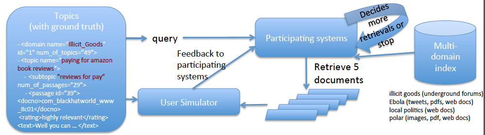

In order to take part in the DD track, you need to be a registered participant of TREC. The TREC Call for Participation, at
http://trec.nist.gov/pubs/call2016.html, includes instructions on how to register. You must register before May 1, 2016 in order to participate.
The datasets and relevance judgments will be made generally available to non-participants after the TREC 2016 cycle, in February 2017. So register to participate if you want early access.
The TREC DD track provides interesting and understudied domains of documents. In 2016, we will have two domains: Ebola and Polar. All the datasets are formatted using the Common Crawl Architecture schema from the DARPA MEMEX project, and stored as sequences of CBOR objects. See the
Datasets page for more details.
Within each domain, there will be 25-50 topics that represent user search needs. In the Ebola domain, these have been developed by the NIST assessors, whereas in the Polar domain, the topics were developed by Annie Burgess and Chris Mattman at USC. A topic (which is like a query) contains a few words. It is the main search target for one complete run of dynamic search. Each topic contains multiple subtopics, each of which addresses one aspect of the topic. The NIST assessors have tried (very hard to) produce a complete set of subtopics for each topic, and so we will treat them as the complete set and use them in the interactions and evaluation.
An example topic from the 2015 Illicit Goods domain topic set may be found
here. It is about "paying for amazon book reviews" and contains 2 subtopics.
The topics will be made available from the
Tracks page in the TREC Active Participants area. You cannot access this page without registering for TREC. If you lose your active participants password, you will need to contact
trec@nist.gov.
The topics file contains not only the queries but in fact the full ground truth data: subtopics, relevant documents, and highlighted passages. DO NOT READ THE FILE. The file should be used only as input to the jig, and your system receives the truth data via the jig. If you examine the topics file, your run may not be labeled automatic but rather is a manual run.
When your "run" starts, your system will communicate with the jig via a simple API. Your system indicates that it is ready for a new query, and the jig will give you a query along with its domain label. Your system can use that query to search the domain collection and return up to five documents to the jig. The jig will reply with relevance information for any of those retrieved documents that have been judged.
Your systems will receive an initial query for each topic, where the query is two to four words and additionally indicates the domain by a number 1, 2, 3 or 4. In response to that query, systems may return up to five documents to the user. The jig (acting as a simulated user) will respond by indicating which of the retrieved documents are relevant to their interests in the topic, and to which subtopic the document is relevant to. Additionally, the simulated user will identify passages from the relevant documents and assign the passages to the subtopics with a graded relevance rating. The system may then return another five documents for more feedback. Systems should stop until they believe they have covered all the user's subtopics sufficiently.
The subtopics are not known to your system in advance; systems must discover the subtopics from the user's responses.
The jig only gives relevance information when it exists. If the jig gives no information about a document your system retrieved, it does not mean that the document is not relevant, it means that the user hasn't examined it. Your system should assume this partial relevance situation, NOT the traditional TREC interpretation that unjudged documents are not relevant.
The following picture illustrates the task:

The system's interactions with the user can be simulated by a jig that the track coordinators provide. This jig runs on Linux, Mac OS, and Windows. You will need the
topics with ground truth to make the jig work, and your system may only interact with the ground truth through the jig that we provide.
The jig package will be released on the Github soon. We will provide the jig program, as well as instrucions on how to set up and run the jig with an example oracle system, and how to write your system to connect with the jig.
The primary measures will be Cube Test and µ-ERR. Scoring scripts are included as part of the jig. We will also likely report other diagnostic measures such as basic precision and recall.
The Cube Test is a search effectiveness measurement that measures the speed of gaining relevant information (could be documents or passages) in a dynamic search process. It measures the amount of relevant information a search system could gather for the entire search process with multiple runs of retrieval. A higher Cube Test score means a better DD system, which ranks relevant information (documents and/or psaasages) for a complex
search topic as much as possible and as early as possible.
Reference: Jiyun Luo, Christopher Wing, Hui Yang, Marti Hearst. The Water Filling Model and The Cube Test: Multi-Dimensional Evaluation for Professional Search. CIKM 2013.
http://cs-sys-1.uis.georgetown.edu/~xd47/InfoSense/publication/cikm2013.pdf
In TREC, a "run" is the output of a search system over all topics. In the DD track, the runs are the output of the harness jig. Participating groups typically submit more than one run corresponding to different parameter settings or algorithmic choices. The maximum number of runs allowed for DD-2016 is
five from each team.
We use a line-oriented format similar to the classic TREC submission format:
topic_id docno ranking_score on_topic subtopic_rels
where 'on_topic' is 1 or 0 if the document is relevant to any subtopic, and the subtopic_rels indicate graded relevance for the document for all relevant subtopics. For instance:
topic_id docno ranking_score on_topic subtopic_rels
DD15-1 1322120460-d6783cba6ad386f4444dcc2679637e0b 883.000000 1 DD15-1.1:3|DD15-1.4:2|DD15-1.4:2|DD15-1.4:2|DD15-1.4:2|DD15-1.4:2|DD15-1.2:2|DD15-1.2:2
DD15-1 1322509200-f67659162ce908cc510881a6b6eabc8b 564.000000 1 DD15-1.1:3
DD15-1 1321860780-f9c69177db43b0f810ce03c822576c5c 177.000000 1 DD15-1.1:3
DD15-1 1320503040-e8c92486dc3462e4a352c4fd41d3a723 66.000000 0
DD15-1 1327908780-d9ad76f0947e2acd79cba3acd5f449f7 25.000000 1 DD15-1.3:2|DD15-1.1:2
Participants are expected to submit at least one run by the deadline.
Runs may be fully automatic, or manual. Manual indicates intervention by a person at any stage of the retrieval. We welcome unusual approaches to the task including human-in-the-loop searching, as this helps us set upper performance bounds.